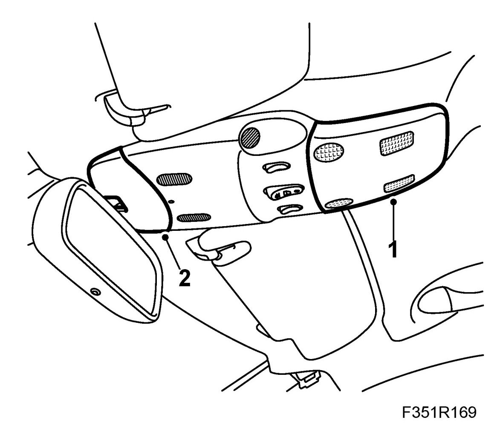
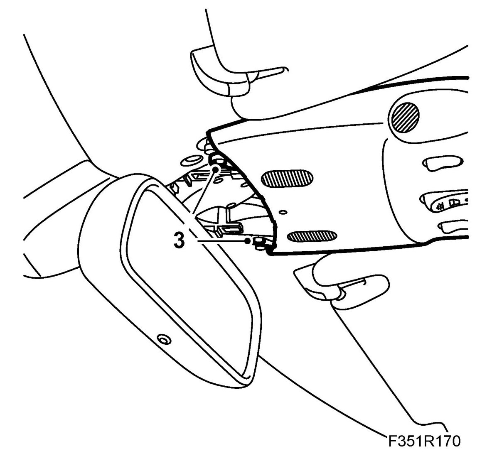
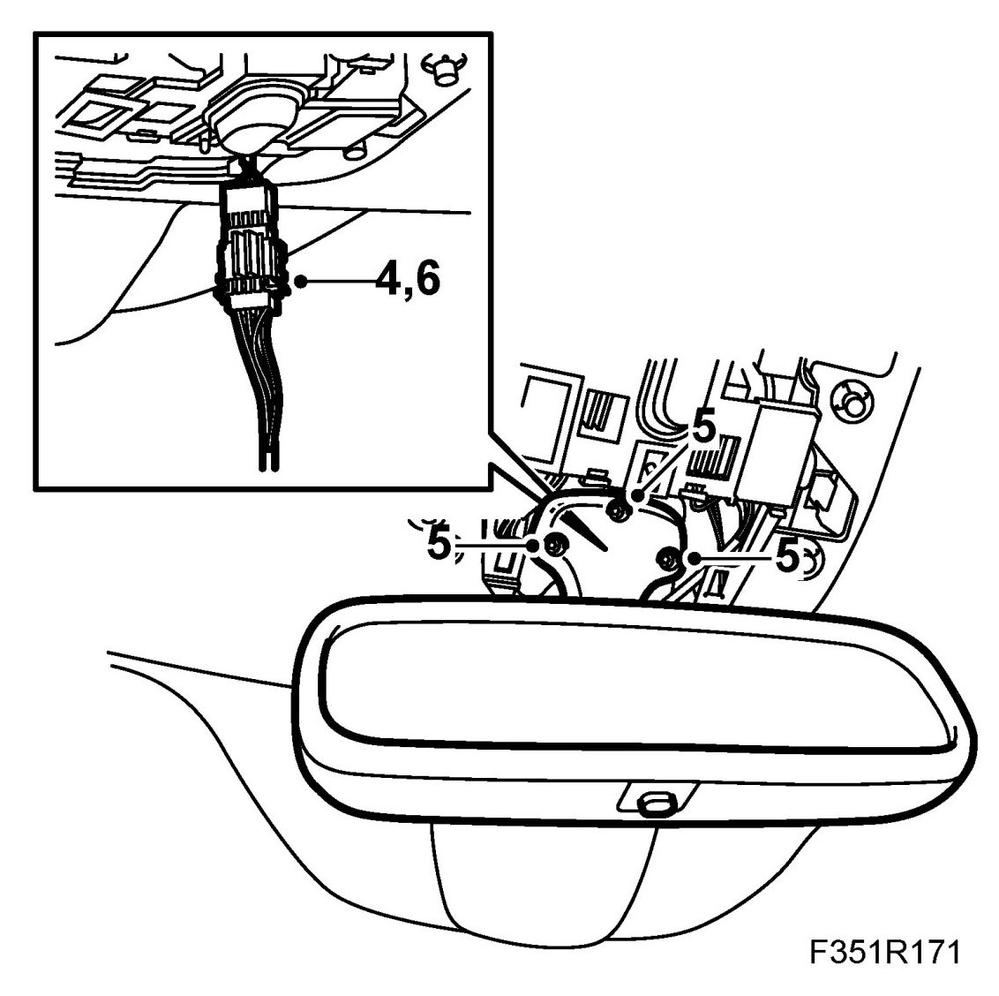
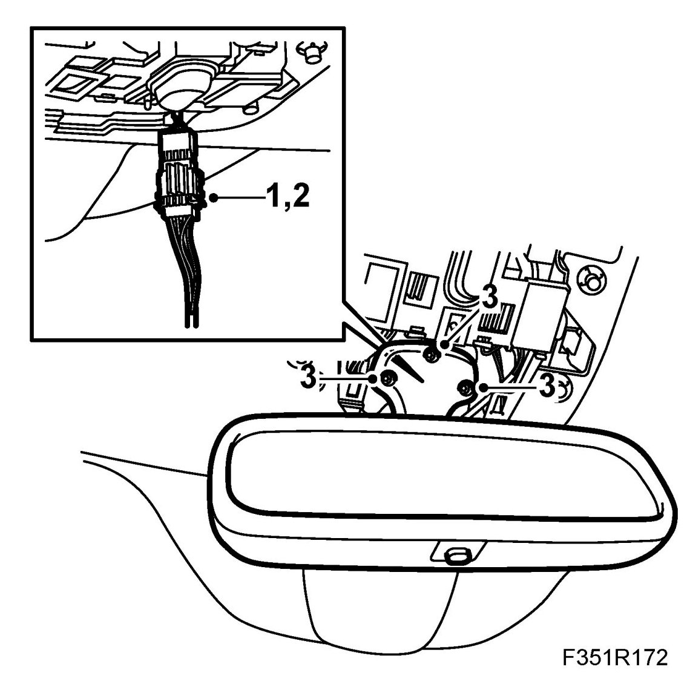
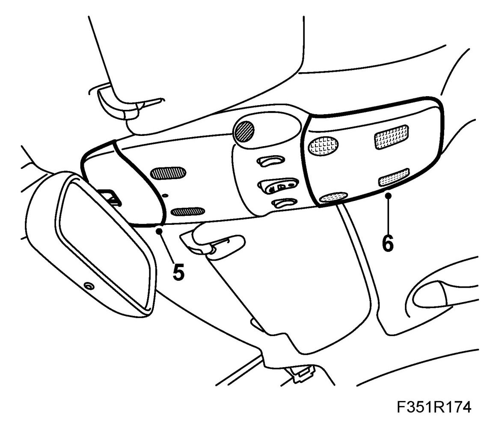

Interior Rear-View Mirror
Interior Rear-view Mirror
To remove
1. Remove the lamp lens using 82 93 474 Removal tool.

2. Remove the front cover using 82 93 474 Removal tool.
3. Remove the centre cover screws.
IMPORTANT: Take care when releasing the locking mechanism on the connector so as not to damage the connector. Pull the halves straight apart to avoid bending the pins. For further information regarding connectors, refer to Connectors, handling and inspection.

4. Cars with ADM: Remove the connector from the lamp console.

5. Remove the mirror screws.
6. Cars with ADM: Remove the connector.
7. Lift away the rear view mirror.
To fit
IMPORTANT: Take care when plugging in the connector so as not to damage or press out the pins/sleeves in the connector. For further information regarding connectors, refer to Connectors, handling and inspection.
1. Cars with ADM: Plug in the connector.

2. Cars with ADM: Fit the connector to the lamp console.
IMPORTANT: Ensure that the wires are not trapped.
3. Put the rear-view mirror in place and fit the screws.
4. Fit the centre cover on the roof lighting. Fit the screws.
5. Fit the roof light front cover.

6. Fit the roof light rear cover.
7. Check the operation of the mirror and the lamps.
Cars with ADM: Perform function check of the automatic anti-dazzle rear-view mirrors.